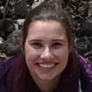

Faculty

Dr. Michael Sorice
Assistant Professor, Department of Forest Resources and Environmental Conservation, Virginia Tech

Dr. Quinn Thomas
Assistant Professor, Department of Forest Resources and Environmental Conservation, Virginia Tech

Dr. Francois Birgand
Assistant Professor, Department of Biological and Agricultural Engineering, North Carolina State University


Dr. Madeline Schreiber
Professor, Department of Geosciences, Virginia Tech
Students
Arianna Krinos
Undergraduate Student, Carey Lab, Virginia Tech



Katie Krueger
Graduate Student, Hydrogeosciences Research, Virginia Tech